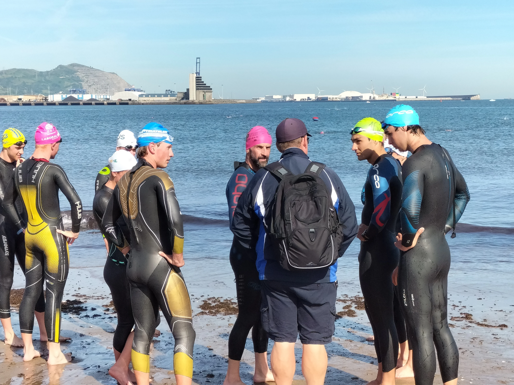

No te pierdas nuestra prueba reina. Toda la información sobre inscripciones, recorridos y clasificaciones en la web oficial.
Ir a la Web del Memorial
Una mañana para aprender, compartir y entrenar con referentes internacionales.
Neopreno, gorro, gafas, toalla, chanclas.
Zapatillas y ropa deportiva adecuada.
* Traer ropa de cambio para la charla y comida posterior.
Recepción y explicación general de la jornada.
Consejos sobre neopreno, orientación y estrategia con Luke Willian y Warwick Dalziel.
Entradas al agua, trazado y simulaciones de competición por grupos.
Rodaje guiado por el recorrido oficial del Triatlón de Getxo.
Charla con invitados en Tiki Toki y networking final (14:00).

Técnica en Fadura o travesías en playa todos los lunes, miércoles y viernes.
 Foto: Iñigo Larreina
Foto: Iñigo Larreina
Velódromo los jueves y rutas grupales de fondo los fines de semana.
 Foto: Iñigo Larreina
Foto: Iñigo Larreina
Entrenamientos de técnica, series y carrera continua en pista de Fadura y alrededores.
| Lunes | Martes | Miércoles | Jueves | Viernes |
|---|---|---|---|---|
| Natación (7:00) | Atletismo (19:00) | Natación (7:00) | Ciclismo (19:00) | Natación (7:00) |
Distancia Sprint. Incluye también categorías cadete en un entorno espectacular.
San Sebastián. Impulsando la participación de la mujer en nuestro deporte.
"En memoria de Onditz". Una de las pruebas con más historia en la Playa de la Concha.
Triatlón en el entorno del embalse de Ullibarri-Gamboa, una cita clásica del triatlón alavés.
Prueba de duatlón de montaña en Izarra. Una disciplina exigente para los amantes del BTT.
Memorial Paco Royo. Nueva e ilusionante cita en el calendario que combina natación y carrera a pie.
Una prueba ideal para disfrutar del ambiente festivo en la ría.
Cita federada que incluye categorías cadete. Competencia de alto nivel.
Distancias Sprint y Super Sprint en uno de los entornos más bellos de la costa.
El gran evento de la capital con distancias Half, Estándar y Aquabike.
Triatlón popular de parejas mixtas. Compañerismo y deporte en Zarautz.
Memorial Agustín Ugarte. La cita más importante para nuestro club en casa.